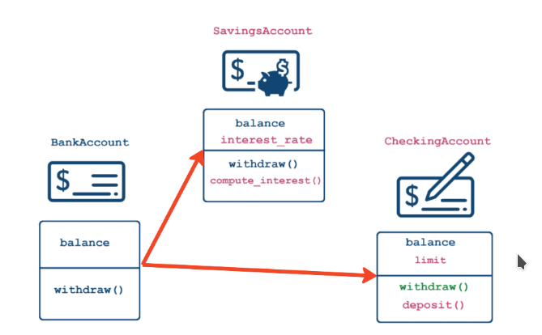

Introduction
Working On It Right NOW
Rotating an object:
This is my note on rotating objects.
This is a fundamental concept of math: sin, cos and complex numbers are used for rotating a body. To visualize this concept, I used the SDL_2 library with C. I believe that C is the best language for understanding but it is not that practical.
Using sine and cosine.
Firstly, have a look at the code:
const int angleIncrement = 10, centerX = WINDOW_WIDTH / 2, centerY = WINDOW_HEIGHT / 2;
double angle = angleIncrement * Pie / 180; // Convert angle to radians
for(int i = 0; i < totalPointOfX_Y; i++){
double originalX = x[i] - centerX;
double originalY = y[i] - centerY;
x[i] = centerX + originalX * cos(angle) - originalY * sin(angle);
y[i] = centerY + originalX * sin(angle) + originalY * cos(angle);
}
Prerequirements:
- X & Y of all vertex of the said object must be known else another method can be used.
So what the hell is that?
Understanding the Code:
-
Constants:
-
angleIncrement is the angle change per frame. If Angle was 10, next frame it will be 20 and next 30 and so on...
-
centerX && centerY is the point from which the rotation takes place.
-
-
angle: computer uses the unit of radian for calculation so a simple conversion: Formulae: $$\text{angleInDegree} = \frac{\text{angleInRadian} \times \pi}{180}$$ $$\text{angleInRadian} = \frac{\text{angleInDegree} \times 180}{\pi}$$
-
The Loop: Basically the loop is acting on all of the vertex and applying the same formulae based on the common center of rotation:
$$x' = x \cos(\theta) - y \sin(\theta)$$ $$y' = x \sin(\theta) + y \cos(\theta)$$
Derivation of formulae is on another section. Click Here.
Highly recomended to look at the derivation to better your concept as a programmer.
In short, the rotation happens upon a center X, Y which in my case is the center of the screen. (The value can be changed to change the center) Sin and Cos have a unique graph to them from their primary definition. Y is defined by sine of the angle while cos is defined by the x-coodinate.

What happens if the graph is limited to single point while
Again, look at the derivation to better understand the formulae.
Using Complex Numbers:
On Development...
Rust
Local Documentation and Version Update
To access local documentation, use the following command:
rustup doc
To update to the latest version of Rust, use:
rustup update
To check the version of Rust running, use:
rustc --version
Macros
In Rust, a macro is a pre-defined sequence of automated input designed to streamline repetitive tasks. To call a macro, use the ! symbol. For example:
macro_name!(arguments);
Note that macros don't always follow the same rules as functions.
Cargo
Cargo is Rust's build system and package manager. Here are some key features and commands:
Creating a New Project
To create a new project, use:
cargo new folder_name
This command creates a new folder with a Cargo.toml file and a src folder containing a main.rs file. It also generates a new Git repository along with a .gitignore file.
Building and Running a Project
To build a project, use:
cargo build
To run a project, use:
cargo run
Alternatively, you can build and run a project in one step using:
cargo run
Checking for Errors
To check for errors without creating a binary, use:
cargo check
This command quickly checks the code to make sure it compiles but doesn't produce an executable.
Building for Release
To build a project for release, use:
cargo build --release
This command compiles the project with optimization and creates an executable in the target/release directory.
Syntax and Learning
Input/Output Library
To obtain user input and print output, you need to import the io library into scope using:
use std::io;
By default, Rust brings a set of items defined in the standard library into the scope of every program, known as the prelude.
Variables
In Rust, variables are declared using the let keyword and are immutable by default. To make a variable mutable, use the mut keyword. For example:
let apples = 5;
let mut bananas = 5;
Data Types
Rust is a statically typed language, which means it must know the data type of all variables at compile time. The language has four primary scalar types:
-
Integers

-
Floating-point numbers
-
Booleans
-
Characters
Basic Numeric Operations
Here's an example of basic numeric operations in Rust:
fn main() {
// addition
let sum = 5 + 10;
// subtraction
let difference = 95.5 - 4.3;
// multiplication
let product = 4 * 30;
// division
let quotient = 56.7 / 32.2;
let truncated = -5 / 3; // Results in -1
// remainder
let remainder = 43 % 5;
}
Compound Types
Rust has two compound types:
- Tuples
- Arrays
Tuples have a fixed length and can be declared using the following syntax:
let tup = (500, 6.4, 1);
Arrays have a fixed length and can be declared using the following syntax:
let a = [1, 2, 3, 4, 5];
Note that every element of an array must have the same type.
Variables and Mutability
In Rust, variables are immutable by default. To make a variable mutable, use the mut keyword. For example:
let mut x = 5;
To make a variable immutable forever, use the const keyword. For example:
const Y: u32 = 60;
Note that const and mut are different in that const makes a variable immutable forever, while mut makes a variable mutable.
Shadowing
Rust allows shadowing, which means you can declare a new variable with the same name as an existing variable. For example:
let x = 3;
let x = x + 1; // this overshadows the value of previous declaration
Object Oriented Programming In Python
Objects: Object = data + functionality
Example:
- Customer:
-
data:
- email = xyz@gmail.com
- phone = xxx-xxx-xxxx
-
functionality
- place order
- order Functionality
- cancel order
- place order
-
In Python, Everything is an Object
Classes as blueprints
- Class: blueprint for objects outlining possible states and behaviors
- State = an object's data: this is the attributes Example: df.shape
- Behavior = an object's functionality: this is the methods Example: df.head(10)
# Display attributes and methods:
print(dir([1, 2, 3, 5]))
Class Anatomy:
class <name>:
def <function_name>(self, variables...):
pass
def identity(self, name):
self.name = name
print(f"Customer name is {name}")
c_one = Customer()
c_two = Customer()
- WHAT IS self?
- Classes are templates
- self should be the first argument of any method
- self is a stand-in for the (not yet created) object:
# continuing from above anatomy c_one.identity("alex") # outputs: Customer name is alex # the code is same as Customer.identity(c_one, "alex") # same output print(c_one.name) # outputs: alex
init constructor Class Anatomy:
class <name>:
"""Docstrings"""
def __init__(self, variables..., variableX = 0): # supports default value too
self.name = variables[0]
...
def <methodName>(self, ...):
pass
Constructor
- Add Data to Object when creating it
- init() method is called everytime object is created.
- Constructor is called automatically because of methodname syntax.
<name>.__doc__ # outputs the docstring of the object
Classes vs. instance attributes
Core Principles of OOP
- Encapsulation: Bundling of data and methods
- Inheritance: Extending existing class
- Polymorphism: Creating Unified Interface
Class-level attributes:
- Data shared among all instance of a class
- "Global variables" within the class
class <name>:
# Class Attribue
<variable> = <variable value>
Min = 300000
Note: to access the class attribute, use -> ClassName.AttrName
Class methods:
class Employee:
def __init__(self, name, salary):
self.name = name
self.salary = salary
# use decorator to declare class method
@classmethod
# cls argument refers to the class
def from_file(cls, filename):
# DO stuff here
# Can't use any instance attributes
with open(filename, "r") as file:
name = file.readline().strip() # Read the first line
salary = file.readline().strip() # read second line
return cls(name, int(salary)) # cls(...) will call __init__(...)
# Call the class, not the object
emp = MyClass.from_file("xyz.txt")
print(emp.name)
- Possible to define class methods
- Must have a narrow scope because they can't use object-level data
Method is a function that is specific to the class.
This decorator allows us to modify the behavior of the method defined directly afterwards.
- Allow alternate constructors
- can only have one init()
- use class methods to create objects
When to use:
- Alternate constructors
- Methods that don't require instance-level attributes
- Restricting to a single instance (object) of a class: Singleton -> init
- Database connections
- Configuration Settings
Class Inheritance:
Code reuse 
- Someone has already done it
- OOP is great for customizing functionality by combining with other packages
class BankAccount:
def __init__(self, balance):
self.balance = balance
def withdraw(self, amount):
self.balance -= amount
class SavingsAccount(BankAccount):
def __init__(self, balance, interest_rate):
BankAccount.__init__(self, balance)
self.interest_rate = interest_rate
def deposit(self, amount):
self.balance += amount
def withdraw(self, amount, fee = 0):
if (amount <= self.limit):
BankAccount.withdraw(self, amount + fee)
# Inheritance "is-a" relationship
print(isinstance(SavingsAccount, BankAccount)) # TRUE but inverse is false
You can run the constructor of parent class first by Parent.init(self, args...)
Operator Overloading: comparing objects
The eq() method
- eq() is called when 2 objects of class are compared using ==
- Accepts 2 arguments: self and other-objects to compare
- Return Boolean
class Customer:
def __init__(self, acc_id, name):
self.acc_id, self.name = acc_id, name
def __eq__(self, other):
print("__eq__() is called")
# return True if all attributes match
return (self.acc_id == other.acc_id) and (self.name == other.name) and (type(self) == type(other))
customer1 = Customer(123, "Alex")
customer1 = Customer(123, "Alex")
customer1 == customer2
# prints:
# __eq() is called
# True
Other Comparison Operators:
- == : __eq__()
- != : __ne__()
- >= : __ge__()
- <= : __le__()
- > : __gt__()
- < : __lt__()
PYTHON will always call the comparison operators for the child class
String representation and Inheritance comparison
str():
- print(obj), str(obj)
- informal, for end user
- string representation repr()
- repr(obj), printing in console
- formal, for developer
- reproducible representation
- fallback for print()
print(np.array([1,2,3]))
# Output: [1 2 3]
str(np.array([1, 2, 3]))
# Output: '[1 2 3]'
repr(np.array([1, 2, 3]))
# Output: 'array([1, 2, 3]'
class Customer:
def __init__(self, name, balance):
self.name = name
self.balance = balance
def __repr__(self):
return f"Customer('{self.name}', {self.balance})"
Exceptions:
- Prevent the program from terminating when exception is raised.
- try except finally(optional)
- raising errors: raise ValueError("...")
In python exceptions are classes that are inherited from BaseException Or Exception
BaseException
+-- Exception
+-- ArithmeticError
| +-- FloatingPointError
| +-- OverflowError
| +-- ZeroDivisionError
+-- TypeError
+-- ValueError
| +-- UnicodeError
| +-- UnicodeDecodeError
| +-- UnicodeEncodeError
| +-- UnicodeTranslateError
+-- RuntimeError
...
+-- SystemExit
...
Custome Exceptions:
class BalanceError(Exception):
pass
class Customer:
def __init__(self, name, balance):
if balance < 0:
raise BalanceError("Balance has to be non-negative!")
else:
self.name = name
self.balance = balance
Introduction
Shell Command Reference
Basic Navigation and File Management
pwd # Print current directory
ls # List items in current directory
ls /path/to/dir # List items in specified directory
ls -R # List all files and directories recursively
ls -F # Append / for directories and * for executables
cd /path/to/dir # Change to specified directory
cd ~ # Change to home directory
cd .. # Move up one directory
cp source.txt dest.txt # Copy file
mv oldname.txt newname.txt # Move or rename file
rm filename.txt # Remove file
rmdir directory # Remove empty directory
mkdir new_directory # Create new directory
File Viewing and Manipulation
cat file.txt # Display file content
less file1.txt # View file with pagination
head file.txt # Display first 10 lines
head -n 5 file.txt # Display first 5 lines
# Use man for command manual
man command_name # Display manual for command
Text Processing
cut -d, -f1 file.csv # Extract first column from CSV
grep pattern file.txt # Search for pattern in file
grep -c pattern file.txt # Count matching lines
grep -v pattern file.txt # Show lines that do not match
# Pipe example
head file.txt | tail -n 2 # Display last 2 lines of the first 10
Output Redirection and Piping
command > output.txt # Redirect output to file
command1 | command2 # Pipe output of command1 to command2
Word Count and Sorting
wc -l file.txt # Count lines in file
sort file.txt # Sort file content
sort -n file.txt # Sort numerically
uniq file.txt # Remove duplicate lines
Variables
echo $USER # Print value of USER variable
my_var=value # Define a shell variable
echo $my_var # Print variable value
Loops
for filetype in gif jpg png; do
echo $filetype
done
for filename in directory/*; do
echo $filename
done
Shell Scripts
bash script.sh # Run a shell script
sort $@ | uniq # Sort and remove duplicates from input files
cut -d, -f $2 $1 # Use command-line parameters in script
Regular Expressions
- ? matches a single character
- [...] matches any character in brackets
- {...} matches any of the comma-separated patterns
#!/bin/bash
# Create sample files
touch file1.txt file2.txt file3.csv file4.txt file5.csv file6.doc
# Display all files
echo "All files:"
ls
# Use regular expressions to match files
echo -e "\nFiles that start with 'file' and end with '.txt':"
ls file*.txt
echo -e "\nFiles that start with 'file' and have a single character before '.csv':"
ls file?.csv
echo -e "\nFiles that are either .txt or .csv:"
ls file{1..5}.{txt,csv}
# Use grep to filter content in a sample text file
echo -e "\nCreating a sample text file for grep demonstration..."
echo -e "apple\nbanana\ncherry\napricot\nblueberry" > fruits.txt
echo -e "\nLines containing 'a' or 'b':"
grep '[ab]' fruits.txt
echo -e "\nLines that do not contain 'a':"
grep -v 'a' fruits.txt
# Clean up
rm file*.txt file*.csv file*.doc fruits.txt